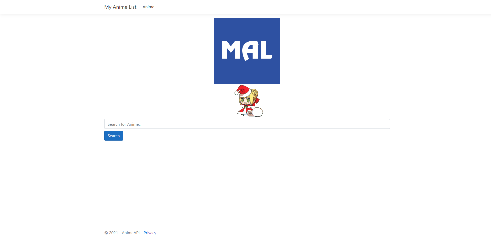
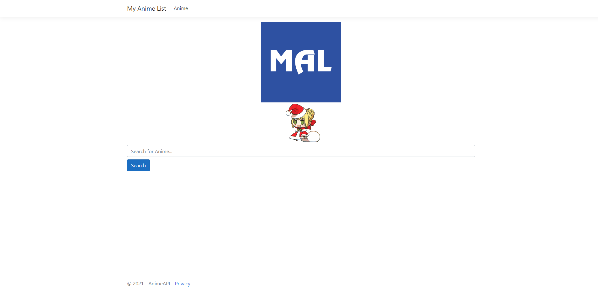
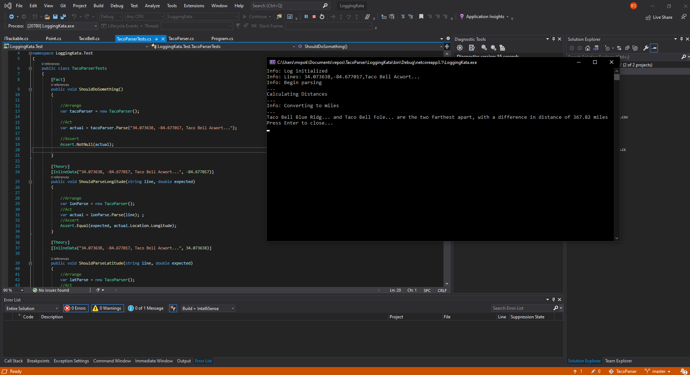
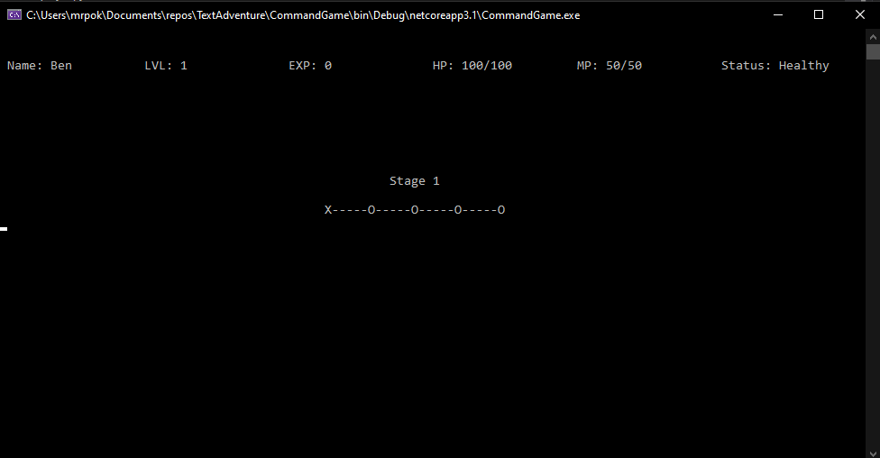

Projects
Anime API search engine
An MVC Web Application that utilizes ASP.NET and the Jikan MyAnimeList database API to create a search engine to display titles that are related to the user input.
An MVC Web Application that utilizes ASP.NET and the Jikan MyAnimeList database API to create a search engine to display titles that are related to the user input.
Used to parse a text file containing the name and coordinates of a list of franchise businesses and determine the distance between the farthest two in miles. Makes use of the .NET framework and GeoCoordinatePortable to use the GetDistanceTo() to accurately determine the distances.
A text based command line adventure game hard coded in Visual studios using C# and makes use of the .Net Framework. Keeps track of a basic level up system, HP, MP, and EXP while going through a dungeon of enemies to fight. Hidden damage point stats and rng for attack misses and enemy experience drops.
